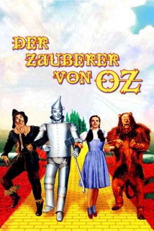

#4478 Der Zauberer von Oz
Alternativ: The Wizard of Oz
Auszeichnungen: 2 Oscars gewonnen für 4 Oscars nominiert
 
 IMDB-Wertung: 8.1 / 10
IMDB-Wertung: 8.1 / 10  IMDB-TOP-Platzierung: 236
IMDB-TOP-Platzierung: 236  Metascore: 0
Metascore: 0 
Ein Sturm trägt die kleine Dorothy Gayle in das magische Land Oz. Verzweifelt macht sie sich auf den Weg in die Hauptstadt, wo der große Zauberer von Oz lebt - nur er kann ihr die Rückkehr nach Hause ermöglichen. Der Weg dorthin wird zu einer Reise voller Gefahren und Abenteuer, doch Dorothy findet schnell Freunde und Verbündete: eine Vogelscheuche, die sich Verstand wünscht, einen Mann aus Blech, der gern ein Herz hätte und einen furchtsamen Löwen, der unbedingt mutiger sein möchte.
Jahr: 1939
Dauer: 101 Minuten
FSK: 0
Land: USA Studio: Metro Goldwyn MayerTonspuren:
Untertitel:
Auflösung: SD (736x544) Größe: 1986 MB
Genre: Abenteuer, Familie, Fantasy, Musical
Regisseur: Victor Fleming,  George Cukor, Mervyn LeRoy, Norman Taurog, King Vidor
George Cukor, Mervyn LeRoy, Norman Taurog, King Vidor
Drehbuch: Jordan Peele
Soundtrack:
Darsteller:
Datei: X:\1900-1949\Zauberer von Oz, Der (1939, FSK0, 736x544).mp4 seit 26.09.2016
Festplatte: HD 1900-1970
 Es gibt insgesamt 80 Filme in der Gruppe '1900-1949'
Es gibt insgesamt 80 Filme in der Gruppe '1900-1949'